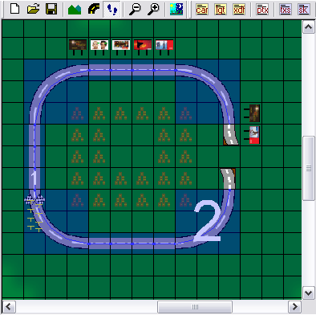
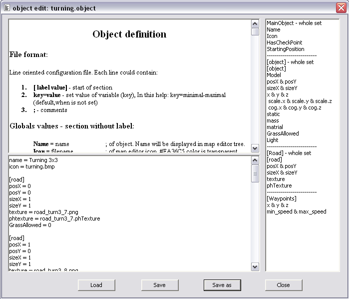
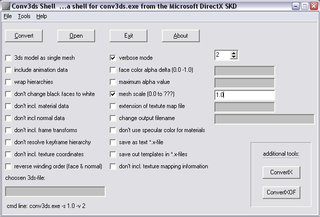

The Limited Editor is a powerful tool for the Unlimited Racer game. The editor allows to create or modify maps, game objects and other game properties. We wish you a lot of hours of enjoyment with this editor. We look forward to seeing some great maps and new objects.
The Limited Editor has 3 views:
There are two buttons with arrows.
There is a tree, which contain nodes and map objects (leaves).
There are 9 height levels. To increase or decrease the terrain level of a larger area, press the mouse button and move. Yellow frame appears and demarks given area after the mouse button is unpressed.
When the object is selected in the object tree, it is possible to set the object in the map by mouse left button. To set or delete more objects press the mouse button and move. Yellow frame appears and shows the possible location of objects are placed or will be deleted. Only one object could be placed on one position in the map beside start position, which could be everywhere.
When switched to the race course editor mode, editor tries to find the way from the start position. The start position should be placed next to the object with waypoints. It is possible go on by pressing the left mouse button on the objects with waypoints. If you want to delete part of path, press right button on the path and the path from the end to the current mouse position will be deleted. When you change something in the map edit mode, the path will be lost. The beginning of each part of the path is labeled by number. Path highlighted in blue color.
The file edit dialog is a tool for editing Unlimited Racer's files. In the top window is displayed help.In the bottom is edit window. In the right culom is list of keys of templates.if you double click on an item of list, a selected template will be added to edit window.
The true power of Unlimited Racer is not actually "unlimited racing" but "unlimited editing". If the set of game objects offered by Limited Editor is not satisfying for you, you can add your own object.
First of all you have to create a new 3D model of some object. You can use any 3D studio for this, but it is important to be able to export your new model into a .x file format used by Unlimited Racer. There are several options you have to obtain model in .x format:
The latest case is the most common, so we will take a closer look at this one. Suppose you already have a 3d model of a tree. You have to export the model to .3ds file format, so lets say the file name is tree.3ds. Now you have to use some external tool to convert it to .x format. You can find some on the Internet, for example: Conv3ds, Deep Exploration or EZ Conv3DS which internally uses the first mentioned Conv3ds tool. Deep Exploration is a complex powerful tool which we can strongly recommend, however it's not free. So we will describe the procedure on Conv3ds.
Download Conv3ds from the link above so you have a proper version (other versions will probably contain only command line tool). If you start the shell.exe program, a window as showed on following image should appear.
First, click on Open button and find the tree.3ds file in the Open dialog. When the file is chosen, you have to specify some parameters. The image above shows the most common configuration. You can change scaling factor though. When creating models in your 3d studio, use generic units and assume 1 unit = 1 cm. If you use different measure, you will have to update the scaling factor here by changing the value 1.0 to fit your needs. Then you can click on Convert button which performs the conversion. A new file tree.x should appear in the same location as your .3ds file. With a bit of luck this is what you wanted, so copy this model file into [UnlimitedRacerInstallPath]\Data\Models\ directory.
Remember, that you can create several models for single game object. Each model can represent the same entity, but in different level of complexity (or detail). Creating more models (up to 10) for single object is a good habit which commonly leads in a better game performance than having just a single complex model. So if you have more models, try to name them tree_1.x, tree_2.x, etc.
Finally you have to copy all textures used on your model into [UnlimitedRacerInstallPath]\Data\Textures\ directory. Supported image (texture) formats are .png, .tga, .bmp, .jpg and .gif. You can use as many textures as you want on your model, however we highly recommend to use only 1 image per model, with both height and width of a size of a power of 2 (e.g. 64, 128, 256,...) and as small as possible.
Once you have a valid .x model file (or a set of .x files) placed in proper game folder, you need to create a model definition which can be associated with Limited Editor's game objects. Use Limited Editor to create this file. Click on the button which is marked by number 12 on the first figure of this manual. File edit dialog will appear. Doubleclick on ALL LODS item in the right panel and it should fill the lower panel with predefined data. 10 sections describes 10 levels of detail of your new object. Each one can use different model and different texture(s).
Choose the first section (which is LOD0) - level of detail description - and define a 3d model for it. This means you set the model property to the name of the .x file (tree_1.x in our case). So the result can be:
<LOD0> model = tree_1.x <textures> </textures> </LOD0>
The textures section can be used to replace texture usage for this specific model. This is most usual when you create one model and have several different textures available for it. Common example is a single car available in different colors. Lets say the original model uses texture tree.png. You want to create a new snow-covered tree and you have a special texture tree_snow.png available. In textures section you define these substitutions by adding OldTexture = NewTexture lines into it.
You have to repeat the described procedure 10 times to define all 10 levels of detail. Each level can use different model, so you can bind the most simple model to the LOD0 and the most complex one to LOD9. However, you can still use the same model for all levels of detail if you don't have more models. The result of whole procedure can be following:
<LOD0>
model = tree_1.x
<textures>
tree.png = tree_snow.png
</textures>
</LOD0>
<LOD1>
model = tree_1.x
<textures>
tree.png = tree_snow.png
</textures>
</LOD1>
<LOD2>
model = tree_1.x
<textures>
tree.png = tree_snow.png
</textures>
</LOD2>
<LOD3>
model = tree_2.x
<textures>
tree.png = tree_snow.png
</textures>
</LOD3>
<LOD4>
model = tree_2.x
<textures>
tree.png = tree_snow.png
</textures>
</LOD4>
<LOD5>
model = tree_2.x
<textures>
tree.png = tree_snow.png
</textures>
</LOD5>
<LOD6>
model = tree_3.x
<textures>
tree.png = tree_snow.png
</textures>
</LOD6>
<LOD7>
model = tree_3.x
<textures>
tree.png = tree_snow.png
</textures>
</LOD7>
<LOD8>
model = tree_4.x
<textures>
tree.png = tree_snow.png
</textures>
</LOD8>
<LOD9>
model = tree_4.x
<textures>
tree.png = tree_snow.png
</textures>
</LOD9>
The model definition is done, you only have to save it by clicking on Save button and proceed to create a new game object using this model.
Create a new map in Limited Editor or simply open some older one and click with a right mouse button on the Object tree view. From the shown popup menu choose Add new item and now a New item should appear in the tree view. Right click on it and choose Rename to rename this item to be more familiar (Tree in snow for example).
Well, you have a new game object which can be placed into map, but it has no visual nor physical representation in the game itself. You have to associate a model to it first. You did a lot of work to create a model definition so it's now the time to use it. Right click on the new item again and choose Properties. A file edit dialog should appear with the lower panel empty. Your job is to fill the lower panel with adequate object properties. You can set its name, associate an icon to this object (if you have one) which will appear in the Map view when placed into map. Of course, the most important is associating a model to your new object, so doubleclick on the [Object] - whole set item in the right panel and you will be asked to choose the model definition file. Choose the one you've just created (say tree_snow.modelDef) and the lower panel will be automatically filled with a bunch of unset properties and one (Model) set to the chosen model definition file name. Always remember to watch the upper panel which contains complete description of all available properties so you can configure your new object properly. Setting all (needed) properties can take you a while, but the time spent here is well paid by the result you will see in the game.
Now it's time to place the object into your map, save it and take a ride! Once you are familiar with this procedure, stop limiting yourself with common objects, you can create anything you want! And remember that we are looking forward for seeing your products, just let us know that you have something by e-mail: works@crazyanimals.net or share your results and experiences with other player on our forums: forum.crazyanimals.net.
Finally, the Crazy Animals team wish you a lot of fun with the (hardly) Limited Editor and Unlimited Racer!